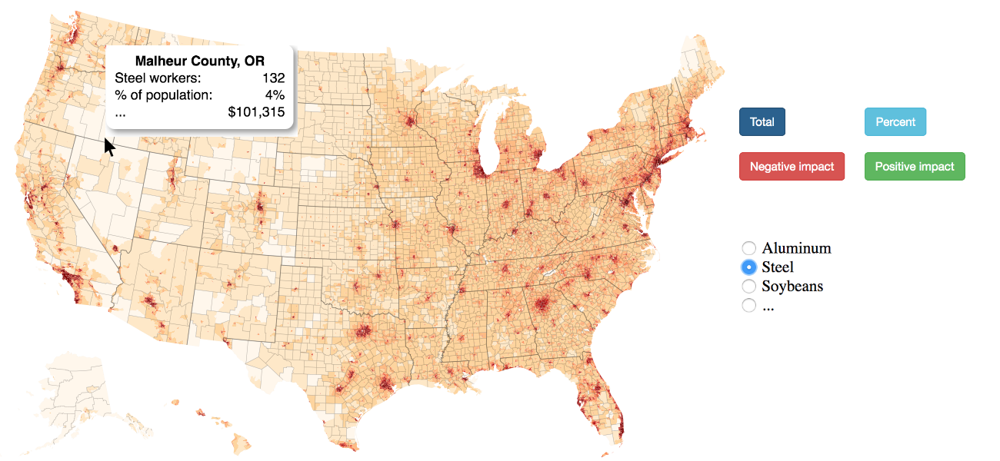

Where Industries Vulnerable to the Trade War are Concentrated
Team:
William Coates: wcoates@ucsc.edu
Xianlin Shao: xshao7@ucsc.edu
Kunal Dhillon: kusdhill@ucsc.edu
GitHub Link
Why?
Title: Where Industries Vulnerable to the Trade War are Concentrated
Purpose:
The purpose of this project is to visually demonstrate how large of an impact a trade war between China and the United States may have on each nation. The visualization is intended for any groups affected by the tariffs and those concerned with global trade relations. The visualization can also aid economists in getting a better graphic representation of a potential trade war.
Current Visualization Prototype
Current Visualization Prototype
Visualization Prototype Sketch

Data Variables and Sources
- Chinese Goods With New Tariffs
- Source
- Time Period: 2018
- Agency: United States Trade Representative
- US Goods With New Chinese Tariffs
- US Commodity Imports/Exports
- Main US Source
- Time Period: 1996-2018
- Agency: United States International Trade Commission
-
Chinese Source
- Time Period: 2016
- Agency: Chinese Ministry of Commerce
- US Imports of Steel Mill Products
- Source
- Time Period: 2010-2018
- Agency: US Department of Commerce, Enforcement & Compliance
- US Employment by Industry and Region
- (Note: could use for employment in production of a tariffed good, which would theoretically benefit, AND/OR employment in industries that consume a tariffed good, which would theoretically be harmed)
- Source
- Time Period: 2017
- Agency: United States Department of Labor: Bureau of Labor Statistics
Existing Visualizations